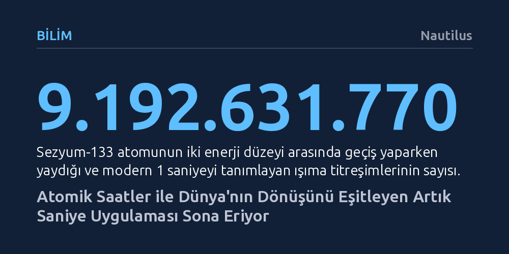

BILIM · Nautilus · 2026-10-14
Dünya’nın dönüş hızındaki düzensizlikler nedeniyle atomik saatlere eklenen artık saniyeler, modern dijital sistemlerde ciddi kesintilere yol açtığı için 2027 itibarıyla terk ediliyor. Uluslararası metroloji kurumu, atomik zaman ile astronomik zaman arasındaki farkın bir saate kadar büyümesine izin vererek kesintisiz zaman ölçeğine geçmeyi hedefliyor.
Zamanın doğanın değişmez bir ritmi değil, atomik saatlerin kusursuzluğu ile gezegenimizin yalpalayan dönüşü arasında sürekli uzlaştırılması gereken insan yapımı bir mutabakat olduğunu gösterir.

Gündelik hayatımızda zamanı pürüzsüz ve tekdüze akan bir nehir gibi düşünürüz. Ancak binlerce yıl boyunca bir günün süresi, gezegenimizin kendi ekseni etrafındaki tek bir tam dönüşü üzerinden tanımlandı. Takvimlerimizi Dünya'nın Güneş etrafındaki 365 çeyrek günlük turuna uydurmak için dört yılda bir şubat ayına bir gün eklemeye alışkınız. Benzer bir yaklaşımla, atomik saatlerin ölçtüğü süre ile gezegenin gerçek dönüşü arasındaki uyumsuzluğu gidermek için de uzun yıllardır 'artık saniye' uygulamasından yararlanılıyordu.
Fakat Dünya mekanik bir saat gibi kusursuz dönmüyor. Okyanuslardaki gelgit sürtünmesi, atmosferik hava hareketleri ve yer kabuğunun altındaki erimiş çekirdeğin çalkantıları, gezegenin dönüş hızını sürekli olarak milisaniyeler ölçeğinde dalgalandırıyor. Bilim insanları zamanı Dünya'nın bu değişken hareketlerinden bağımsız ve çok daha yüksek bir hassasiyetle ölçmeye başladığında, doğanın ritmi ile saatlerimiz arasındaki bağ yavaş yavaş koptu. Artık saniyeler, bu iki farklı gerçekliği bir arada tutmak için geliştirilmiş yapay bir yamadan ibaretti.
Günü dilimlere ayırma serüvenimiz oldukça eski bir tarihe uzanıyor. Antik Mısırlılar gündüz ve geceyi on ikişer parçaya bölerek 24 saatlik günün temellerini attılar; mevsimlere göre gün ışığı süresi değiştiğinden bu saatlerin uzunluğu da yıl boyunca sabit kalmıyordu. Sonrasında Mezopotamya'nın Sümer ve Babil uygarlıklarından miras kalan ve kalansız bölünebilme kolaylığı sunan 60'lık sayı tabanı astronomlarca benimsendi. Bir saatin 60 dakikaya, her dakikanın da 60 saniyeye bölünmesiyle standart bir Güneş günü 86.400 saniye olarak kabul edildi.
Zamanı saniye hassasiyetinde ölçmek ise ancak 1657 yılında Christiaan Huygens'in sarkaçlı saati geliştirmesiyle gerçeğe dönüştü. Sarkaç belirli bir standart getirse de küresel ölçekte aranan mutlak kesinliği sağlayamadı. Fizikçilerin aradığı değişmez referans üç asır sonra atom düzeyinde bulundu. 1967 yılında kabul edilen tanıma göre 1 saniye, sezyum-133 atomunun iki enerji seviyesi arasındaki geçişte yaydığı radyasyonun tam 9.192.631.770 kez salınması olarak tanımlandı. Böylece zaman ölçümü, gökyüzünün değişken gözleminden koparak mikroskobik fiziğin sarsılmaz yasalarına bağlandı.
Atomik saatlere dayalı Eşgüdümlü Evrensel Zaman (UTC) yürürlüğe girdiğinde, Dünya'nın dönüşünü izleyen astronomik zaman ölçeği UT1 ile aralarında kaçınılmaz bir ayrışma başladı. Ay'ın okyanuslar üzerindeki çekim gücü gezegenin dönüşünü uzun vadede yavaşlattığı için, 1972'den itibaren belirli aralıklarla sisteme fazladan bir saniye eklenerek bu fark 0,9 saniyenin altında tutuldu. Ne var ki 86.400 saniyenin ardından gelen beklenmedik 86.401'inci saniye, mikrosaniyelik hassasiyetle senkronize olan modern bilgisayar ağları için büyük bir tehdit oluşturdu.
İşletim sistemleri zamanın geriye gitmeyeceğini ve günün sabit uzunlukta olacağını varsayar. Aniden eklenen tek bir saniye veri tabanlarını kilitledi ve sunucuları devre dışı bıraktı; nitekim 2012 yılında Reddit'in saatlerce erişilemez olması ve Linux çekirdeğinde yaşanan krizler bu kırılganlığı gözler önüne serdi. Google ve Meta gibi teknoloji devleri bu şoku atlatmak için artık saniyeyi gün içine milisaniyelik dilimlerle dağıtma yöntemine (smearing) başvurdu. Üstelik 2015'ten bu yana Dünya beklenmedik biçimde hızlanmaya başladı; 29 Haziran 2022'de gün 1,59 milisaniye erken bitti. Bu durum, tarihte hiç uygulanmamış 'negatif artık saniye' yani saatlerden bir saniye eksiltme ihtimalini doğurarak dijital altyapıdaki endişeyi zirveye taşıdı.
Yaşanan altyapı krizleri ve negatif artık saniye belirsizliği, uluslararası metroloji yetkililerini köklü bir reform yapmaya yöneltti. 100'den fazla üye ülkesi bulunan Ağırlıklar ve Ölçüler Genel Konferansı, Ekim 2026 toplantısında artık saniye ekleme uygulamasını sonlandırmayı öngören karar tasarısını ele alıyor. Planlanan takvime göre, 20 Mayıs 2027 tarihinden itibaren Eşgüdümlü Evrensel Zaman, hiçbir yapay saniye müdahalesi olmaksızın kesintisiz bir çizgi halinde ilerleyecek.
Yeni tasarı, atomik zaman ile Dünya'nın dönüşü arasındaki farkın bir saate (3.600 saniye) kadar büyümesine izin veriyor. Bu açığın bir saate ulaşması yüzyıllar alacağından sivil toplumun günlük hayatında herhangi bir aksama yaşanmayacak; aksine dijital sistemlerimiz senkronizasyon hatalarından arınacak. Buna karşılık gökbilimciler, uydu takip sistemleri ve hassas göksel navigasyon yapan uzmanlar, gözlemlerini yeryüzünün gerçek yönelimiyle eşleştirmek için bu büyüyen matematiksel farkı kendi yazılımlarında ayrı bir değişken olarak hesaba katacaklar.